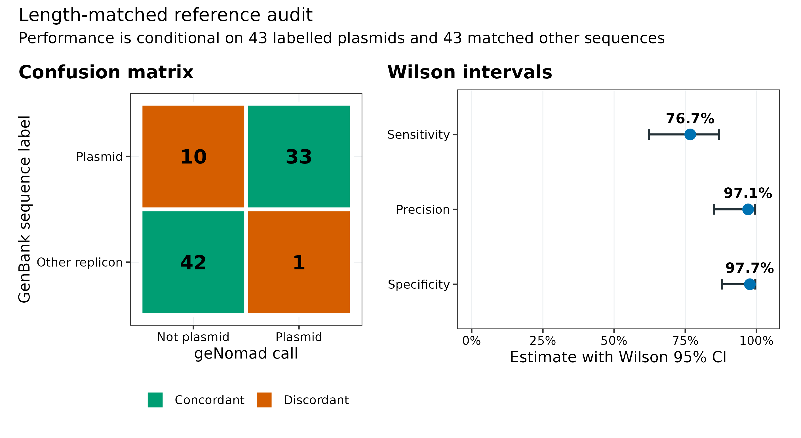
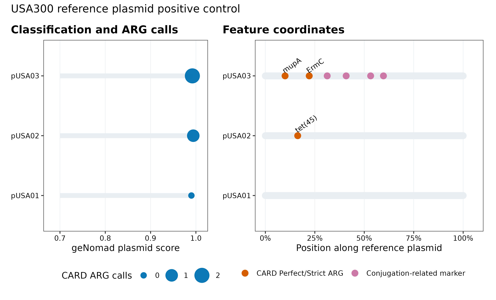
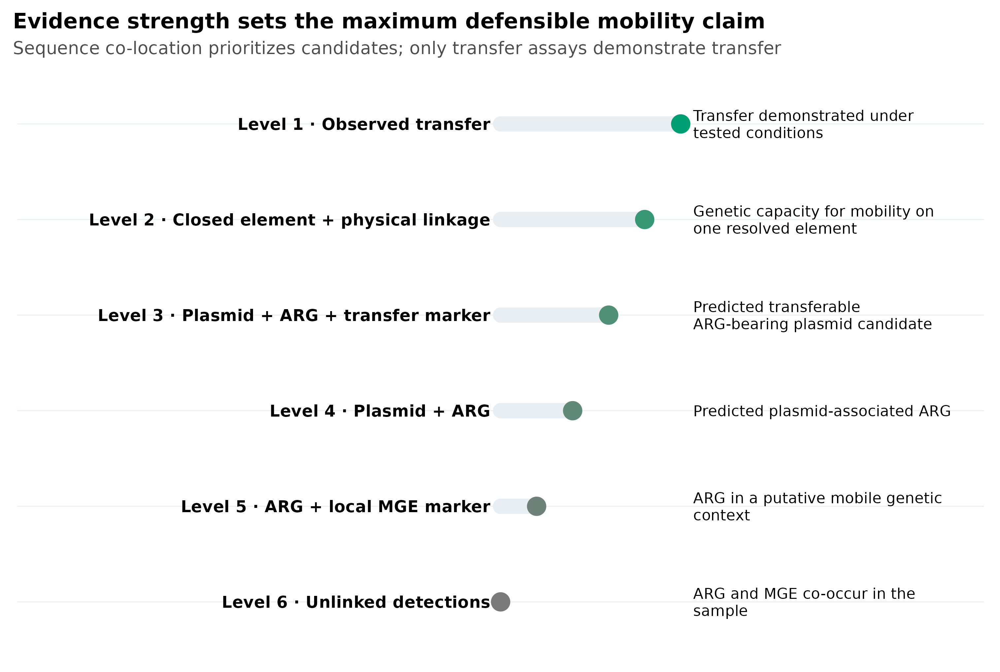
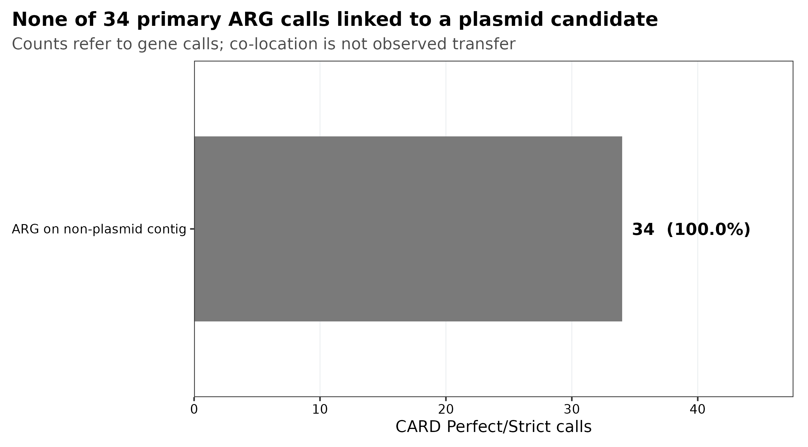

质粒与可移动元件：从 geNomad 命中到 ARG 可移动性证据
先给结论：geNomad 的 plasmid call 是候选生成器，不是“这条 DNA 已经在细菌间传播”的证明。可靠的 ARG 可移动性结论至少要分开回答四件事：序列像不像质粒、ARG 是否与该元件发生物理连接、元件是否具备完整转移模块、转移是否被实验观察。PRJEB52977 两个 mock 样本的共组装中，geNomad 给出 218 条候选，其中 42 条带 transfer-related marker；但 CARD-RGI 的 34 个 Perfect/Strict ARG 调用没有一个位于这些候选上。精确参考比对又显示，70 条候选由已标注质粒支持，120 条高覆盖匹配完整细胞复制子，28 条没有高覆盖参考支持。相反，USA300 阳性对照的 3 条已标注质粒全部被检出，且 pUSA02 上有
tet(45)，pUSA03 上有mupA、ErmC与 4 个 conjugation-related markers。阴性结果与阳性对照必须一起报告。
只读取固化表并重画 5 组图，4 CPU、4 GB RAM、200 MB 磁盘、耗时约 1 分钟。本次 geNomad 实跑使用 16 CPU、16 splits：10.22 Mb 的匹配参考集耗时 186.63 s、峰值 2.75 GiB RAM；84.81 Mb 共组装耗时 1,092.21 s、峰值 2.83 GiB；USA300 对照耗时 182.64 s、峰值 2.71 GiB。geNomad database v1.9 解压后约 1.47 GB。正式队列建议预留 16–32 CPU、32–64 GB RAM、至少 30 GB 临时磁盘，单个中等共组装约几十分钟至数小时；样本数、contig 数和共享存储速度都会改变耗时。没有服务器时，直接读取 data/small/57-plasmids-mobile-elements-frozen/ 完成审计和作图；全量发现任务放到 HPC 或云端。
物理共定位、可移动性推断和已观察到的转移是不同结论；没有直接证据时不宣称转移发生。
同一段序列上的基因，能证明已经发生转移吗？
主要锚定两篇研究：
- geNomad 论文 Figure 1a：sequence branch、marker branch、聚合、score calibration 与输出表的完整框架；Figure 1d 展示 calibration 前后 score 与经验阳性比例的关系；Figure 3a 比较不同长度片段上的质粒分类性能 (Camargo 等 2024年)。
- Forster 等 2022 年研究的 Figure 1c：MGE 跨 genus、class 和 phylum 的共享范围；Figure 2：15 个 broad-host-range 元件的宿主分布、类型与 ARG；Figure 3c–e：ICE 与 plasmid 的体外 conjugation assay，把“序列预测”推进到“观察到转移” (Forster 等 2022年)。
两篇论文承担不同任务：geNomad 回答“怎样从序列筛出 plasmid candidates”，Forster 等回答“怎样证明 ARG-bearing MGE 仍能跨宿主转移”。不能把前者的分类分数写成后者的实验结论。
本次长度匹配基准由 43 条 GenBank header 明确含 plasmid 的参考复制子，以及 43 条按长度确定性一对一匹配的其他参考序列构成。geNomad 检出 33/43 条已标注质粒，同时在 43 条匹配序列中产生 1 个阳性调用：sensitivity 76.7%（Wilson 95% CI 62.3–86.8%）、precision 97.1%（85.1–99.5%）、specificity 97.7%（87.9–99.6%）。这些指标只适用于这 86 条、这一标签定义和当前数据库，不是自然群落的普适性能。

下载参考并验证上游身份
“MGE”不是“质粒”的同义词
可移动遗传元件（mobile genetic element, MGE）至少包括 plasmid、insertion sequence、transposon、integron-associated cassette、integrative and conjugative element（ICE）、integrative and mobilizable element（IME）与 prophage。它们的复制位置、边界和移动机制不同 (Partridge 等 2018年)：
| 对象 | 常见位置 | 自主复制 | 自主转移 | 最低可主张结论 |
|---|---|---|---|---|
| Plasmid | 染色体外，也可能整合 | 常见但非必然 | 取决于完整 conjugation module | predicted plasmid sequence |
| ICE | 染色体整合态 | 否 | 可编码完整 conjugation machinery | putative ICE；需边界与模块 |
| IME | 染色体整合态 | 否 | 借用其他元件 machinery | putative mobilizable element |
| Integron | 染色体或质粒 | 否 | 本身通常不自主移动 | integron-associated gene cassette |
| IS/transposon | 多种复制子 | 否 | 在分子内或分子间转位 | transposition-associated context |
| Prophage | 染色体整合态 | 随宿主复制 | 诱导后可形成病毒粒子 | integrated provirus/prophage candidate |
IntegronFinder 识别 integrase、attC 与 cassette array (Cury 等 2016年)；它检测的是基因捕获系统，不应自动改写成“可接合质粒”。同样，看到一个 transposase 也只能说明局部移动相关标记，不能证明整条 contig 会跨细胞转移。
ROOT="$PWD"
WORK="$ROOT/work/article57"
# 下载固定 commit 的 PRJEB52977 reference repository
DOWNLOAD_ARTICLE57_PLASMIDS=1 bash data/download.sh
# 若要从 FASTQ 重建同一共组装，下载 ERR9765746/ERR9765747 后运行锁定流程
DOWNLOAD_ARTICLE30_ASSEMBLY=1 bash data/download.sh
# 四个输入均经过 bytes + SHA-256 gate；RGI 输入来自同一 co-assembly 和 USA300
python3 scripts/prepare_article57_plasmids.py \
--project-root "$ROOT" \
--work-dir "$WORK" \
--benchmark-repo data/raw/article57/benchmark_mock \
--coassembly data/small/30-short-read-assembly-frozen/contigs/megahit-coassembly.ge1000.fna.gz \
--rgi-coassembly work/article38/coassembly/coassembly.txt \
--rgi-staphylococcus work/article38/staphylococcus/staphylococcus.txt
column -ts $'\t' "$WORK/asset-check-audit.tsv"
column -ts $'\t' "$WORK/reference-benchmark-labels.tsv" | head -n 12准备脚本不会根据结果重抽 negatives。43 条已标注质粒先按长度、SeqName 排序，再对每条质粒选择尚未使用且绝对 log-length ratio 最小的 comparator；并列时依次按绝对 bp 差和 SeqName 决定。
从“跑一个分类器”升级为三层 benchmark
论文 Figure 3a 在严格训练/测试拆分和不同长度片段上比较工具；真实项目还要加两层：
- 完整参考标签层：检查已知 plasmid 与 non-plasmid replicons；
- fragmented assembly 层：检查短 contig 上的 label conflict 与 unresolved fraction；
- 生物阳性对照层：检查 ARG、plasmid 和 transfer marker 的 join 是否能成功。
本次完整序列匹配基准 precision 为 97.1%，但共组装候选中 120/218 与完整细胞复制子冲突。两者不矛盾：前者测试完整/较长参考序列，后者暴露 fragment-level failure mode。
运行 geNomad 三条分支与精确参考检查
geNomad score 是分类证据，不是转移概率
geNomad 把 nucleotide sequence model 与 marker-content model 聚合为 chromosome、plasmid 和 virus scores (Camargo 等 2024年)。短 contig 的基因少，marker branch 信息不足；重复、保守 housekeeping 区域、chromid 与染色体整合元件又会模糊类别边界。因此，分类结果要保留：
plasmid_score、候选长度和 topology；- plasmid/chromosome/virus markers 与 hallmarks；
- 是否启用 score calibration；
- 数据库 release 与 filtering parameters；
- 与完整参考、assembly graph 和 reads 的独立核验。
这里固定默认 score ≥ 0.7，但没有启用 score calibration，所以输出中的 FDR 为 NA。未经 calibration 的 0.90 不能写成“90% 为真”，更不能写成“90% 可转移”。即使启用 calibration，FDR 也是特定输入批次与校准假设下的经验量，不是单条序列的实验成功率。
GENOMAD_ENV="$HOME/miniconda3/envs/metagenome-virus-discovery-2026.07"
ASSEMBLY_ENV="$HOME/miniconda3/envs/metagenome-assembly-2026.07"
GENOMAD_DB="$ROOT/db/virus-discovery-cache/databases/genomad_db"
python3 scripts/run_article57_plasmids.py \
--project-root "$ROOT" \
--work-dir "$WORK" \
--genomad-db "$GENOMAD_DB" \
--genomad-env "$GENOMAD_ENV" \
--minimap2-exe "$ASSEMBLY_ENV/bin/minimap2" \
--threads 16 \
--splits 16
column -ts $'\t' "$WORK/command-log.tsv"核心 geNomad 命令为：
genomad end-to-end \
--cleanup \
--restart \
--disable-find-proviruses \
--threads 16 \
--splits 16 \
coassembly.fna.gz \
results/coassembly \
"$GENOMAD_DB"没有设置 --enable-score-calibration，所以主阈值是未校准的 score ≥ 0.7，FDR=NA。--disable-find-proviruses 只关闭病毒区段边界寻找，不关闭 plasmid classification。精确参考审计使用 minimap2 -x asm5 --secondary=no，并预注册 identity ≥95%、query coverage ≥80% 为高覆盖支持；best hit 的 label 来自固定参考 header。
把 score calibration 当成分析设计，不是装饰选项
若一个 batch 足够大且组成适合 calibration，可启用并用 maximum FDR 过滤；若 batch 很小或由人为挑选的候选构成，composition-based calibration 也可能失真。无论选择哪条路径，都要在 Methods 写出是否 calibration、score/FDR cutoff 和序列是否先按长度过滤。当前分析明确关闭 calibration，因此绝不从 NA 推断 FDR。
用 CARD-RGI 独立识别 ARG
同一 contig 提供物理共定位，但不等于已经发生转移
ARG 与 plasmid call 位于同一 contig，比“同一样本同时检出 ARG 和质粒”强，因为至少有 assembly-level linkage；但它仍可能来自：
- 短 contig 被错误分类；
- repeat 导致的 chimeric assembly；
- 染色体整合的 plasmid/ICE 片段；
- chromid、secondary chromosome 或其他 cellular replicon；
- ARG 只落在元件边界外的宿主 flank；
- 样本中存在该结构，却没有发生当下或跨宿主转移。
因此，最稳妥的数据结构不是一列 mobile = TRUE/FALSE，而是一张 evidence ledger：分别记录 plasmid classifier、ARG caller、transfer module、element boundary、read support、host linkage 与 experimental validation。
geNomad gene table 中的 AMR marker 适合提示局部功能，但不是完整 resistome 结果。ARG 主结果来自 RGI 6.0.8 + CARD 4.0.1 (Alcock 等 2023年)，并只保留 model-specific threshold 已通过的 Perfect/Strict calls：
RGI_ENV="$HOME/miniconda3/envs/metagenome-resistome-2026.07"
CARD_ROOT=/data/db/card-4.0.1
COASSEMBLY=work/article57/inputs/coassembly.fna.gz
RGI_OUT=work/article57/rgi/coassembly
mkdir -p "$(dirname "$RGI_OUT")"
env PATH="$RGI_ENV/bin:/usr/bin:/bin" \
DATA_PATH="$CARD_ROOT/rgi-db" \
rgi main \
-i "$COASSEMBLY" \
-o "$RGI_OUT" \
-t contig \
-a DIAMOND \
-n 16 \
--include_loose \
--clean \
--low_quality \
-g PYRODIGAL \
-d wgs
# Loose 只留作 sensitivity ledger，不进入主 ARG 集
awk -F $'\t' 'NR==1 || $6=="Perfect" || $6=="Strict"' \
"$RGI_OUT.txt" > "$RGI_OUT.primary.tsv"RGI 的阈值是每个 CARD model 自己定义的规则，不应再用统一 identity 矩形取代。--include_loose 便于审计召回边界，但主图和主结论始终只用 Perfect/Strict。
ARG mobility 要区分六个等级
- Level 6：ARG 与 MGE 只在样本层共现；
- Level 5：ARG 附近有 integrase/transposase/integron marker；
- Level 4：ARG 与独立 plasmid call 在同一 contig；
- Level 3：再加系统级 transfer marker；
- Level 2：closed/boundary-resolved element、read support 与宿主连接齐全；
- Level 1：mating、transformation 或 transduction 实验确认受体获得该元件。
图表、Results 与摘要中的动词必须跟等级一致：co-occurred、was located on a predicted plasmid contig、encoded a putative transfer module、was experimentally transferred 不能互换。
- 把每条 plasmid-positive contig 当成完整、独立质粒；
- 把 geNomad score 当成转移概率；
- calibration 关闭却报告 FDR，或把
NA当 0； - 只报默认 threshold，不报软件和 database release；
- 用
conjugation_genes单列宣称完整 conjugation system； - ARG 与质粒仅在样本层共现，却写成 plasmid-borne ARG；
- 同一 contig 就写“已经发生水平转移”；
- 用 geNomad 内部 AMR marker 代替独立 CARD/AMRFinderPlus screen；
- 只展示候选，不做完整 cellular replicon 负对照；
- 没有 ARG-bearing plasmid 阳性对照，无法区分真阴性与 join/pipeline 失败；
- 把 DTR、环状 assembly 或 replicon marker 等同于可接合；
- 短读长无法解析 repeat 和宿主连接，却把宿主与 host range 写到种/菌株级。
合并候选、ARG、转移标记和参考支持
让阳性对照检查整条证据链
USA300 GCA_000013465.1 有 4 条参考复制子，其中 3 条 header 标为 plasmid。geNomad 全部检出：pUSA01 score 0.9901，pUSA02 0.9942，pUSA03 0.9922。RGI 在 pUSA02 检出 tet(45)，在 pUSA03 检出 mupA 和 ErmC；pUSA03 同时有 4 个 transfer-related markers。

这个对照证明当前软件、数据库和 join key 能找回真实 plasmid-borne ARG；它不把 mock 共组装中的 0/34 自动解释成“样本里绝无移动 ARG”。短读长组装可能没有把 ARG 与 plasmid backbone 连在同一 contig，低丰度质粒也可能未组装出来。
质粒重建不能只靠 contig 分类
对于 short-read metagenome，优先升级为：
- assembly graph + paired-read linkage，检查分支与重复；
- MOB-suite 做 plasmid reconstruction/typing，并报告 unresolved/novel replicons (Robertson 和 Nash 2018年)；
- long-read 或 hybrid assembly 跨越 repeat、ARG 与 backbone；
- coverage consistency、circularization junction 与 raw-read spanning；
- 与宿主 MAG 的 differential coverage/Hi-C/long-read linkage 分开记录。
DTR 或 circular contig 是结构支持，不自动说明能 conjugate；没有 circular signal 也不排除线性 plasmid 或未闭合片段。
transfer module 要做系统级而非单基因判读
把 conjugation_genes 展开为 gene coordinates，随后用 CONJscan/MacSyFinder 检查模块是否完整、方向是否合理、是否跨 contig 断裂。只有 relaxase 而没有 mating-pair formation system 时，更适合写 mobilizable candidate；完整 conjugation machinery 也只说明 genetic capacity，不是 transfer rate。
保存、绘图并做 fail-closed QA
“有移动潜力”与“观察到转移”之间还差实验
证据强度可以写成一个结论天花板：
[ C_{max}=(C_{identity},C_{linkage},C_{machinery},C_{host},C_{experiment}). ]
只要某一层缺失，最终措辞就不能越过它。Forster 等先用跨基因组共享与完整元件结构提出 broad-host-range candidates，再用 mating/conjugation assay、受体选择和基因型确认展示跨宿主转移 (Forster 等 2022年)。这正是序列文章最容易漏掉的一层。

Rscript scripts/plot_article57_plasmids.R \
"$WORK/summary" figures
python3 scripts/freeze_article57_plasmids.py \
--project-root "$ROOT" \
--work-dir "$WORK" \
--output-dir data/small/57-plasmids-mobile-elements-frozen
python3 scripts/validate_article57_plasmids.py \
--project-root "$ROOT" \
--frozen-dir data/small/57-plasmids-mobile-elements-frozen \
--output-dir /tmp/article57-validation \
--figure-dir figures \
--chapter chapters/57-plasmids-mobile-elements.qmd
至少保留 candidate_id, length_bp, plasmid_score, calibrated_fdr, topology, hallmark_count, reference_support, arg_caller, arg_model, arg_tier, arg_coordinates, transfer_system, element_boundary, read_support, host_evidence, evidence_level, claim_ceiling。缺失值写 NA/not tested，不要默认为阴性。
限定移动元件相关结论
Methods template
Plasmid candidates were identified from 18,354 ≥1-kb MEGAHIT v1.2.9 co-assembly contigs (84,811,518 bp) derived from deterministic two-million-pair subsets of PRJEB52977 runs ERR9765746 and ERR9765747. geNomad v1.12.0 was run with database v1.9 (ICTV MSL39), 16 threads, 16 splits, the default minimum plasmid score of 0.7, and score calibration disabled; consequently, calibrated FDR values were not available. Candidate contigs were aligned to the fixed MOCK2 reference inventory (benchmark repository commit a429a3724d4593f35b8d7323b20252a6be90e1cd) using minimap2 v2.31-r1302 (
asm5, secondary alignments disabled). Reference support required ≥95% alignment identity and ≥80% query coverage. ARGs were independently called with RGI v6.0.8 and CARD v4.0.1, retaining Perfect and Strict calls. Transfer-related marker annotations were retained as candidate evidence and were not interpreted as complete conjugation systems or observed transfer. All input assets and frozen outputs were SHA-256 audited.
Results template
geNomad identified 218 plasmid-candidate contigs (1,005–87,818 bp), including 42 candidates with conjugation-related markers. Exact-reference auditing classified 70 candidates as reference-plasmid supported, 120 as conflicting with complete cellular reference replicons, and 28 as lacking high-coverage reference support. None of the 34 CARD Perfect/Strict calls occurred on a geNomad plasmid candidate. In the USA300 positive control (GCA_000013465.1), all three reference-labelled plasmids were detected; tet(45) occurred on pUSA02, whereas mupA and ErmC occurred on pUSA03, which also contained four transfer-related markers. These observations support candidate prioritization but do not demonstrate horizontal transfer.
换到自己的研究中，先检查哪些条件？
需要准备五类输入：
- 组装与 graph：每个样本组装或预注册的 co-assembly，保留 contig length、coverage、GFA 与 assembler version；
- reads：原始 paired reads，最好再有 long reads，用于 junction、breadth、chimerism 与 circularization 检查；
- 独立 ARG 表：CARD-RGI 或 AMRFinderPlus 的 model、identity、coverage、coordinates 与 database release；
- 宿主证据：MAG/linkage/Hi-C/long-read 信息，缺失时不要填宿主；
- 对照：至少一个已知 plasmid-borne ARG 阳性对照和一组完整 cellular replicons 负对照。
推荐的分析顺序是：
- 先锁定最小 contig length、geNomad score/FDR policy 与数据库；
- 分别运行 plasmid classifier 和 ARG caller，不在第一次 join 前人工挑候选；
- 用坐标连接同一 contig 上的 ARG、transfer marker 与 element boundary；
- 对候选运行 MOB-suite、CONJscan 和 IntegronFinder，并查看 assembly graph；
- 用 raw reads/long reads 验证物理连接与闭合；
- 为每条候选赋 evidence level 和 claim ceiling；
- 跨队列分析时按 study/library/assembler 分层，不直接比较 raw candidate counts；
- 真正要写“transferable”或“broad host range”时，增加受体选择、空白对照和元件基因型确认的实验。
如果 ARG 和 transfer machinery 分落在不同 contigs，即使两者 coverage 高度相关，也只能写 sample-level co-occurrence 或待验证 linkage。优先补 long-read/hybrid assembly、Hi-C 或 targeted closure；不要用 abundance correlation 填补物理连接。
图中应该保留哪些信息？
候选图的视觉变量各承担一个问题：x 轴为长度、y 轴为 geNomad score、颜色为 contig 上附加证据、点形为 exact-reference audit。不要再用点大小编码第五个连续变量；读者会失去判读顺序。
配色使用色盲友好的蓝、橙、绿、紫与中性灰；所有图内文字为英文。主图导出 vector PDF，同时保存 350 dpi PNG 和 LZW-compressed TIFF：
source_table <- readr::read_tsv(
"data/small/57-plasmids-mobile-elements-frozen/coassembly-plasmid-candidates.tsv",
show_col_types = FALSE
)
table(source_table$ReferenceSupport)
table(source_table$EvidenceContext)
# 完整出版图由已冻结脚本生成
system2(
"Rscript",
c(
"data/small/57-plasmids-mobile-elements-frozen/scripts/plot_article57_plasmids.R",
"data/small/57-plasmids-mobile-elements-frozen",
"figures"
)
)图注应写清 denominator 与 unit。例如 34 CARD Perfect/Strict gene calls 不能缩写成 34 ARGs，因为同一 ARG 家族可能有多个调用；218 candidate contigs 也不能写成 218 个独立 plasmids。
回到最初的问题
质粒候选、ARG 共定位、完整转移模块与已观察传播必须分层；同一 contig 只证明物理上下文，不证明转移发生。
参考文献
- geNomad 方法、marker/sequence 双分支、calibration 与 benchmark：(Camargo 等 2024年; Camargo 2026年)
- PRJEB52977 真实 mock-community 平台与参考序列：(Meslier 等 2022年)
- ARG ontology、model-specific thresholds 与 CARD-RGI：(Alcock 等 2023年)
- ARG-associated MGE 类型与术语边界：(Partridge 等 2018年)
- Broad-host-range MGE、完整结构与体外转移验证：(Forster 等 2022年)
- Plasmid reconstruction/typing、integron 与 conjugation-system 检测：(Robertson 和 Nash 2018年; Cury 等 2016年; Abby 等 2014年)